Deep Learning 第 9 章 · 待审版本
09_conv：卷积网络讲义中文学习笔记
按 09_conv.pdf 的 PDF 页码编排；图为讲义原图的局部截图，点击可打开大图。中文解释和计算为本笔记整理，图 9.x 的编号沿用讲义。
卷积网络的主线只有四件事：局部连接规定谁能读谁，参数共享规定哪些边用同一权重，步幅与补零规定输出网格，池化汇总邻域响应。下面逐图回答这些规则的含义和边界。
1. 从矩阵乘法到卷积：算什么、怎样求梯度（第 2–7 页）
讲义第 2–3 页的“替换矩阵乘法”是指把无结构的稠密线性映射改成有结构的线性映射；损失函数、链式法则和梯度下降仍照常使用。输入可是一维序列、二维图像或三维时空网格，差别在核的维度。对二维输入，深度学习框架通常计算的是互相关，即核不翻转：
Yi,j,o=bo+c=1∑Cinu=0∑Kh−1v=0∑Kw−1Ku,v,c,oXiSh+u−Ph,jSw+v−Pw,c.式中越界的 X 视为补零；o 是输出通道。一个输出位置读输入的一个小窗口，一个核在所有空间位置重复使用。参数数目为 KhKwCinCout+Cout（含每个输出通道的偏置），不随图像宽高增长。数学上若定义“卷积”要翻核，图 9.1 和 PyTorch 的 conv2d 采用的则是上式这种工程约定。
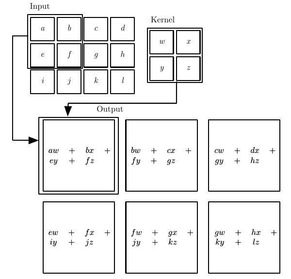
手算一个输出
图中左上角的输出是 aw+bx+ey+fz。取 X=159261037114812、K=[1324]，则 Y=[4484549464104]。3×4 输入、2×2 核、步幅 1、无补零，得到 2×3 输出。
第 4–5 页的矩阵乘法与转置是为反传铺垫：若把窗口展开成线性算子 Y=AX，反传到输入就是 A⊤G，不是 A−1G。
前向：由 X,K 算 Y。输入梯度：由上游梯度 G=∂L/∂Y 经转置线性算子传回 X。权重梯度：同一个核在所有窗口复用，因此各窗口的贡献要相加。
∂Ku,v∂L=i,j∑Gi,jXi+u,j+v,∂Xa,b∂L=i,j,u,v:i+u=a,j+v=b∑Gi,jKu,v.以上两式写的是单输入、单输出通道、步幅 1、无补零的情况。
沿用上面的数值例，令 L=∑Yi,j，于是 G 全为 1。∂L/∂K0,0=1+2+3+5+6+7=24，∂L/∂K1,1=6+7+8+10+11+12=54；中心输入 X1,1 被四个窗口读取，故 ∂L/∂X1,1=1+2+3+4=10。
2. 局部连接、感受野、参数共享（第 8–13 页）
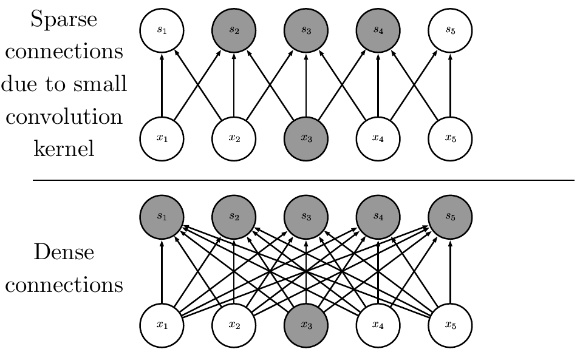
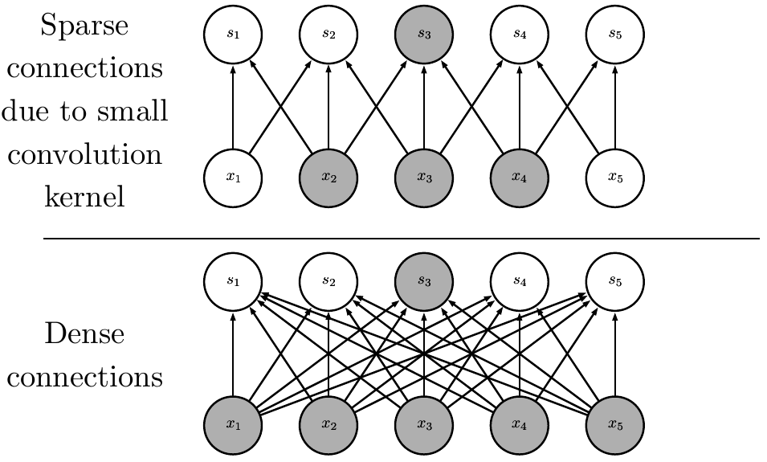
“Sparse 选哪些”由核确定
把一维核宽固定为 3，输出 sj 只读取 xj−1,xj,xj+1。反过来看，x3 只影响 s2,s3,s4。灰色节点分别展示这两个方向。连接模式由核宽、位置、步幅、补零预先定好；训练学习的是边上的数值，不是临时挑几个输入。
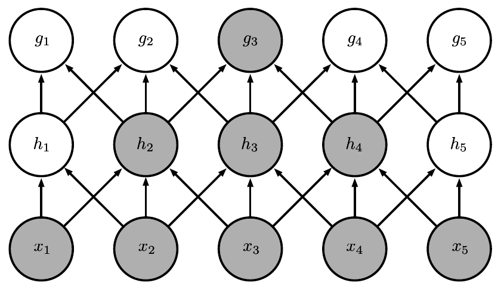
多层以后为何能看得更远
h3 直接读 x2,x3,x4；g3 直接读 h2,h3,h4，因而间接依赖 x1,…,x5。步幅全为 1、每层核宽 k 时，L 层感受野宽度为 RL=1+L(k−1)：核宽 3 时依次是 3、5、7……图中的 x,h,g 只是不同层的记号；别的页用 s 表示输出，没有新的运算。
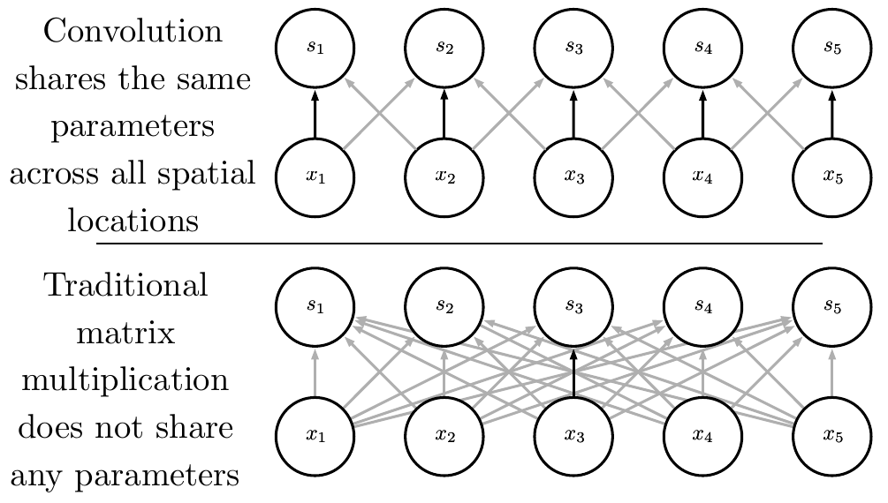
“共享”到底共享什么
例如 si=axi−1+bxi+cxi+1。向右移动一格，变成 si+1=axi+bxi+1+cxi+2：输入变了，a,b,c 没变。反向传播时，每个位置对 a 的梯度累加到同一个 a。局部连接控制计算量；共享控制独立参数量。这两条规则可以分开选择。
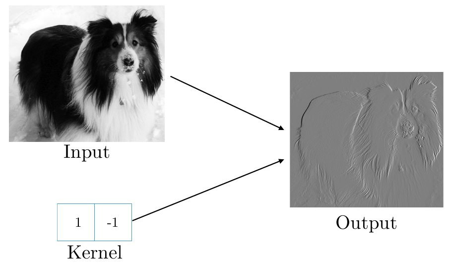
差分核为什么显边缘
K=[1,−1] 给出 Yi,j=Xi,j−Xi,j+1。两侧亮度接近时约为 0，跨竖直边界时绝对值较大；符号对应明暗方向。按讲义的尺寸记法，输入 320×280、核 2×1，沿核扫描的那一轴减少 1，输出 319×280。
图 9.6 的效率账本（第 13 页）
输入 320×280＝89,600 个标量；输出 319×280＝89,320 个标量。以该核为例，忽略偏置：
| 实现 | 需存的权重标量 | 朴素乘加计数 |
|---|---|---|
| 稠密矩阵 | 89320×89600=8003072000 | 大于 16×109 |
| 仅保留局部边的显式稀疏矩阵 | 2×89320=178640 个非零项 | 3×89320=267960 |
| 卷积核 | 2 个独立权重 | 267960 |
每个输出做 2 次乘法、1 次加法，故记作 3 次标量运算。显式稀疏矩阵的 178,640 项可能反复存同两个数；卷积只存一次。稠密计算量是按普通矩阵乘法估计，不是某个优化库的实测速度。
3. ReLU 与池化：哪一种“不变”（第 14–17 页）
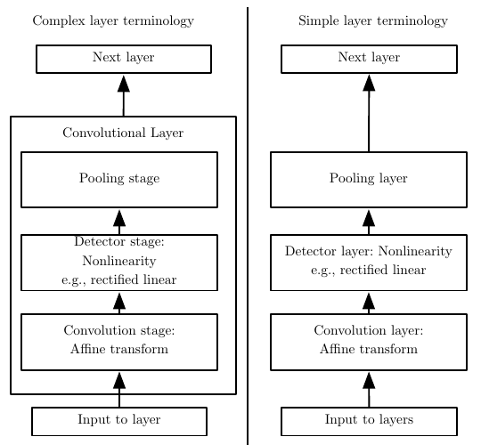
左右做的事完全一样
数据流都是 卷积仿射变换 → ReLU → 池化。左边把三个阶段合称一个“卷积层”，右边逐个称“层”；只是术语颗粒度不同。狭义的 Conv2d 只计算核扫描与偏置；ReLU、池化可接可不接。ReLU(z)=max(0,z) 加入非线性；池化再汇总邻域。
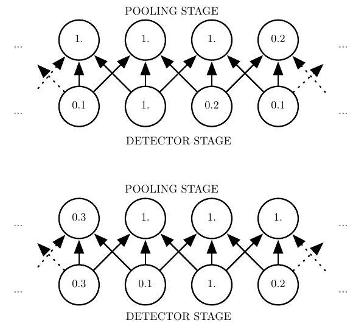
位置移动一格，哪些值没变？
上排检测值约为 [0.1,1,0.2,0.1]，下排峰值移到第三格。宽 3、步幅 1 的窗口中，中间两个窗口依旧都含那个峰值，所以输出仍为 1；两端的结果变了。最大池化只提供局部位置容忍，不保证整张特征图平移后完全相同。此图步幅为 1，因此也没有下采样。
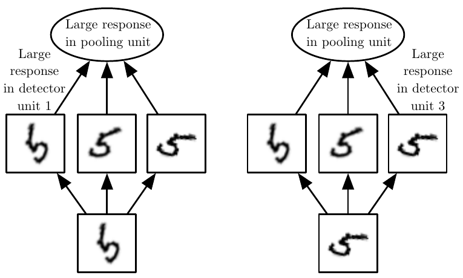
跨通道池化不是空间池化
多个检测器分别对同一目标的几种已学形态敏感。相同位置取 pi,j=maxcai,j,c：不管是检测器 1 还是 3 响应较强，池化单元都能较大。代价是丢失“哪一种形态”更强的信息；前提是训练确实学到了这些变形检测器。
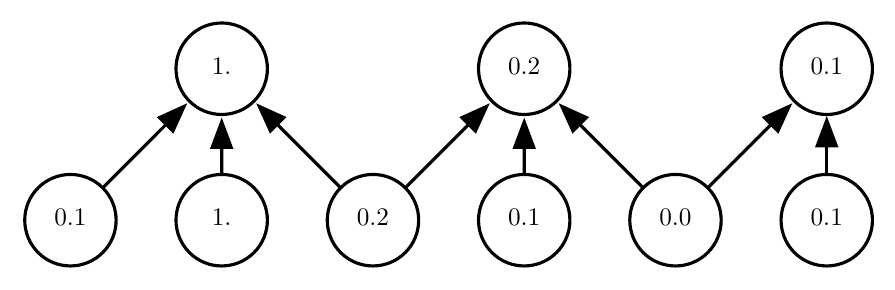
池化与下采样何时同时发生
[0.1,1,0.2,0.1,0,0.1] 用宽 3、步幅 2 取最大值得 [1,0.2,0.1]。三个窗口分别覆盖位置 1–3、3–5、5–6。最后一个窗口只有两个元素，讲义允许保留；若采用“窗口必须完整”的 valid 约定，则只得到前两个输出。输出尺寸必须连同边界约定一起说。
区分两个词：步幅为 1 的卷积对平移近似等变：输入移动，响应也跟着移动（边界会破坏精确等变）。池化让某些小范围移动得到相同汇总值，是局部近似不变。若步幅大于 1，采样还会引入更多位置敏感性。
4. 分类头为什么有三种（第 18 页）
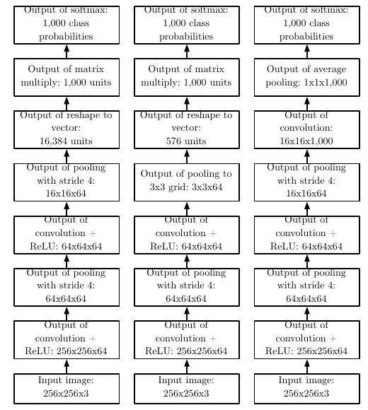
三列共享前半段：256×256×3 → 卷积/ReLU 得 256×256×64 → 步幅 4 池化得 64×64×64 → 卷积/ReLU 后仍为 64×64×64。后半段是三种选择：
- 左：池化到 16×16×64，展平为 16,384 维，接 1,000 类全连接。末层有 16384×1000+1000=16385000 个参数。
- 中：先池到 3×3×64，仅 576 维，末层为 576×1000+1000=577000 个参数。
- 右：卷积产生 1,000 张 16×16 类别响应图；各通道分别对空间 16×16 求平均，成为 1,000 个分数，再 softmax。卷积末层参数取决于核大小，讲义未指定。
软最大值把 1,000 个分数归一为类别概率；全局平均没有把 1,000 个类别混成一个数。
5. 步幅、补零与连接变体（第 19–23 页）
单轴输出长度：Nout=⌊SN+2P−K⌋+1这里先假设膨胀率为 1、两侧各补 P 个零，只保留完整卷积窗口。二维对高、宽各算一次。池化若允许末尾不完整窗口，要改用相应边界规则。
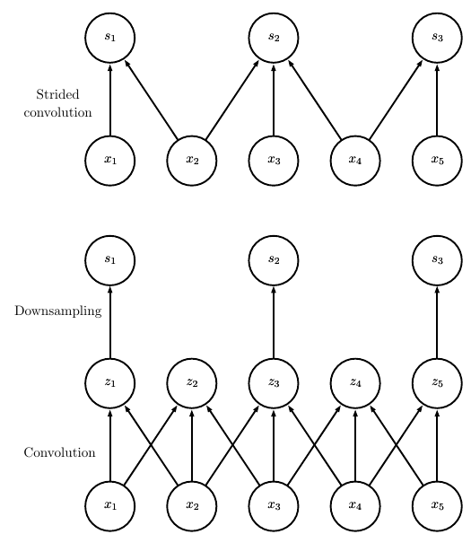
步幅 2 跳过的是输出位置
图中直接算 s1,s2,s3，等价于先算步幅 1 的 z1,…,z5，再取 z1,z3,z5。x2,x4 仍参与邻近窗口的计算，并没有从输入中删去。步幅使网格变稀疏，同时缩小特征图。
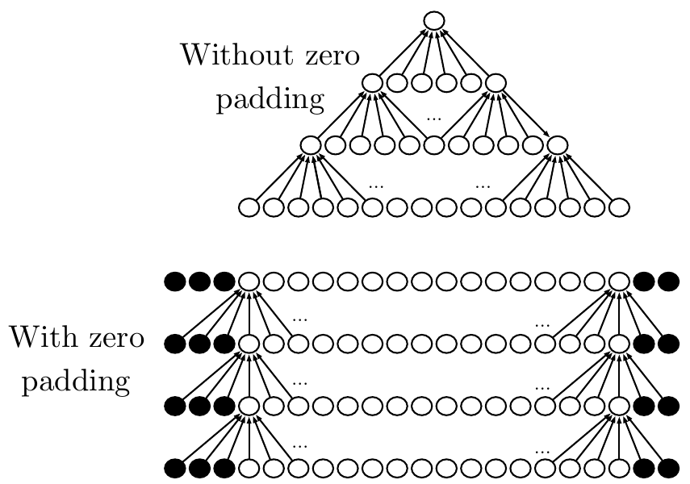
补多少个零？先决定目标尺寸
核宽 3、步幅 1，不补零每层减少 2：长度 5 → 3 → 1。若要保持 5，每侧补 P=(K−1)/2=1 个零。核宽 5 则每侧补 2 个。图里的黑点是每一层重新加入的固定零，不是上一层产生的可学习神经元。偶数核或非对称目标尺寸可能需要左右补不同数量。
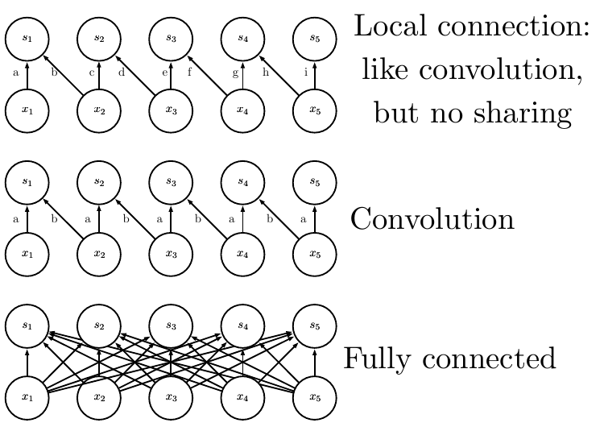
两条独立的设计轴
按图中 5 入 5 出、局部核宽 2、忽略偏置计：局部无共享共 9 条边、9 个权重；标准卷积仍是这些局部边，但只用 2 个共享权重；全连接有 5×5＝25 个独立权重。局部与否决定连哪些边；共享与否决定边是否复用同一个数。
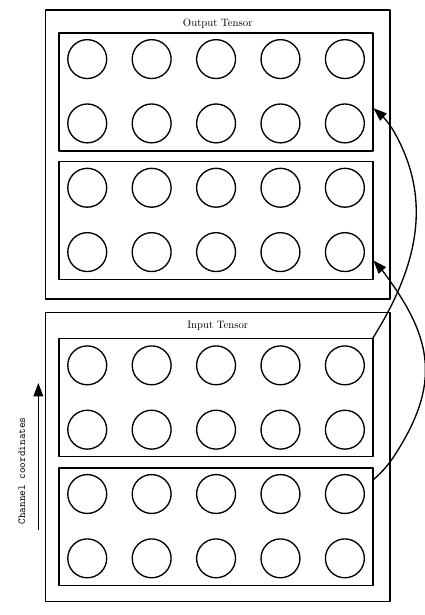
通道连接是另一回事
图中有 4 个输入通道和 4 个输出通道：前两个输出只连前两个输入，后两个输出只连后两个输入。每个通道对仍在空间网格上用局部核。若核为 3×3，全通道连接需 4×4×9=144 个权重；分两组则 2×(2×2×9)=72。这是分组卷积思想；不同于图 9.9 的“跨通道取最大值”。
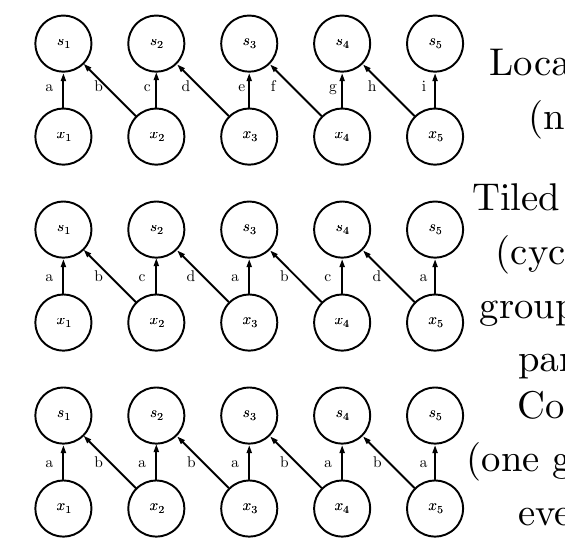
Tiled 是周期复用权重组
中排按位置交替使用 A=(a,b)、B=(c,d)，于是核组序列为 A,B,A,B,A。该图中局部无共享、tiled、普通卷积分别用 9、4、2 个权重（不计偏置）。它没有改变局部连接范围，也不是把图片切成互不重叠的块。
6. 迭代标注、学到的核、后续架构（第 24–27 页）
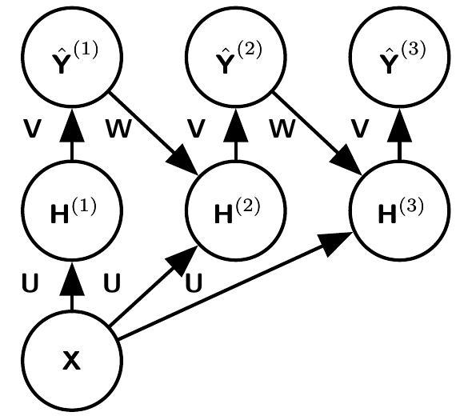
图中 U、V、W 怎样共享
同一张 X 在每轮经同一 U 提取信息；H(t) 经同一 V 产生预测 Y^(t)；上一轮的预测标签 Y^(t−1) 经同一 W 回馈给下一轮隐藏层。可记作 H(t)=f(U∗X+W∗Y^(t−1))、Y^(t)=g(V∗H(t))，首轮反馈设为零。U、V、W 是三套不同参数；各自跨迭代复用。这里 t 是细化轮次，不是视频帧序号。
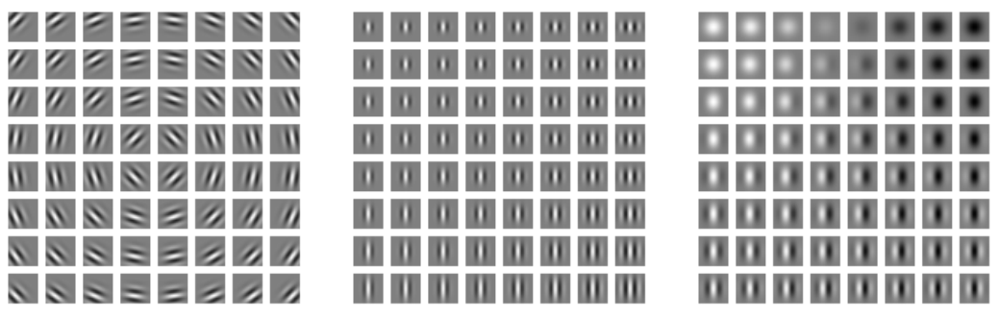
为什么像一组小条纹
Gabor 核可理解为“高斯包络 × 余弦条纹”：g(x,y)=exp[−(x′2+γ2y′2)/(2σ2)]cos(2πx′/λ+ϕ)，其中 x′=xcosθ+ysinθ、y′=−xsinθ+ycosθ。θ 控制方向、σ 控制范围、λ 控制频率、ϕ 控制相位。图中三组分别展示位置/旋转、尺度、频率/相位变化；亮暗代表正负权重，灰色接近零。
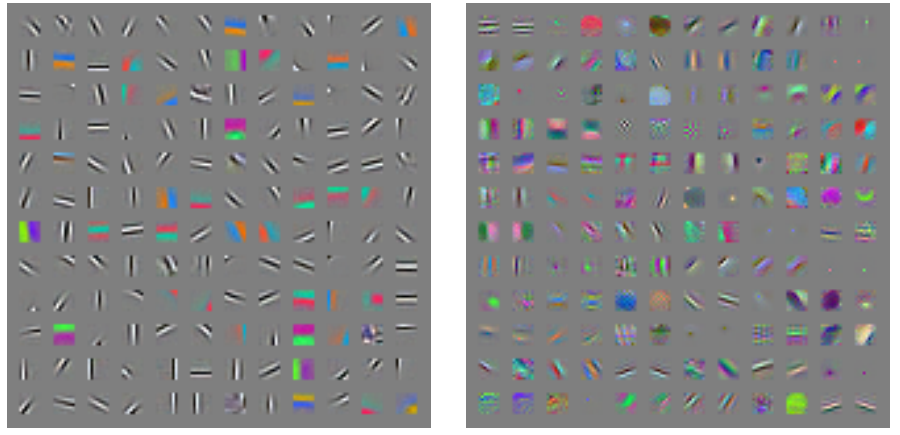
“像 Gabor”不等于预设 Gabor
训练后的许多局部权重呈现有方向的明暗条纹，也有颜色对立图案。左图来自无监督 spike-and-slab sparse coding 学到的图块权重；右图才是有监督 convolutional maxout network 第一层的卷积核。两组来源不同，它们也并非个个都是严格的 Gabor 函数；图中显示的是权重，不是某张图片的激活值。
末页四种架构：分别解决什么
| 讲义名称 | 抓住一个设计点 |
|---|---|
| Spatial Transducer Net | 各层保持卷积形式，从输入网格产生对应的空间输出网格；讲义所用名称不要混同为 Spatial Transformer Network。 |
| All Convolutional Net | 用跨步卷积缩小网格，减少对独立池化层的依赖。 |
| Inception | 并行的不同尺度分支提取特征，常用 1×1 卷积控制通道数与计算量。 |
| ResNet | 残差块 y=x+F(x) 提供恒等捷径，使很深网络更容易优化；它不保证任何设置下梯度都绝不消失。 |
7. 最小代码：手算与自动求导对照
下面直接复现图 9.1 的 2×2 例子。PyTorch 的 F.conv2d 按 [批量, 输入通道, 高, 宽] 读取输入，核按 [输出通道, 输入通道/组数, 核高, 核宽] 存放。
import torch
import torch.nn.functional as F
x = torch.arange(1., 13.).reshape(1, 1, 3, 4).requires_grad_()
k = torch.tensor([[[[1., 2.], [3., 4.]]]], requires_grad=True)
y = F.conv2d(x, k) # stride=1, padding=0
print(y.shape, y[0, 0]) # (1, 1, 2, 3); [[44,54,64],[84,94,104]]
y.sum().backward()
print(k.grad[0, 0, 0, 0]) # 24
print(k.grad[0, 0, 1, 1]) # 54
print(x.grad[0, 0, 1, 1]) # 10想继续验证尺寸，可分别修改 stride 和 padding，再用上面的输出长度公式预先算出形状；groups=2 对应分组通道连接，但输入、输出通道数都要能被 2 整除。
一页回顾
| 看到术语 | 立刻问 |
|---|---|
| 核 / 局部连接 | 一个输出读输入的哪一块？ |
| 参数共享 | 哪些不同位置的边复用同一数值？ |
| 感受野 | 跨多层后，一个输出最终依赖哪些原始输入？ |
| 步幅 / 补零 / 池化 | 输出有几格？末端窗口怎样处理？ |
| 通道 | 每个输出通道连全部输入通道，还是只连其中一组？ |
| 平移等变 / 不变 | 响应跟着平移，还是汇总后某个数保持相同？ |
图源：Ian Goodfellow, Convolutional Networks: Lecture slides for Chapter 9 of Deep Learning (2016)；相关文字解释参照 Deep Learning 第 9 章。代码接口和交叉相关约定参照 PyTorch F.conv2d 文档；架构可追读 FCN、All-CNN、Inception、ResNet。